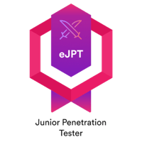
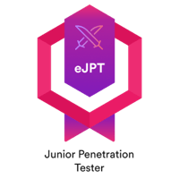

Security
Engineer
Trust, but verify.
Vishal Maddala
#WHOAMI
A security-savvy, network-taming, threat-hunting professional with a knack for keeping things running smoothly (and securely). Armed with CompTIA Security+, EJPTv2, CCNP and CCNA, plus hands-on experience in everything from penetration testing to encryption magic. Whether it's cracking security challenges, optimizing networks, or diving into cutting-edge research, I thrive on solving problems and staying ahead of cyber threats. Passionate about making the digital world a safer place—one secured system at a time.
./work_experience.sh
-
Technical Consultant Engineer
• Configured and optimized Control Plane Policing (CoPP) to mitigate DDoS attacks and prevent control plane exhaustion, ensuring network stability and availability. Investigated and implemented network security enhancements using Access Control Lists (ACLs) to enforce traffic filtering, restrict unauthorized access, and strengthen infrastructure resilience against cyber threats. Proactively fine-tuned security policies to minimize attack surfaces and enhance overall network defense mechanisms.
• Diagnosed and resolved Layer 2 networking issues, including Spanning Tree Protocols (STP, RSTP, MSTP, PVST+), EtherChannel, LACP, and Virtual Port Channel (vPC), to eliminate network loops, enhance redundancy, and optimize link aggregation. Addressed VLAN inconsistencies, spanning tree convergence delays, and misconfigured link bundling, ensuring seamless failover, load balancing, and high availability.
• Diagnosed and resolved Layer 3 routing protocol issues, including OSPF, BGP, EIGRP, IS-IS, and multicast routing (PIM, MSDP, IGMP), to enhance network performance, reliability, and scalability. Troubleshot route convergence delays, suboptimal path selection, flapping routes, and multicast distribution inefficiencies, ensuring seamless traffic flow and minimal downtime.
-
CX Intern
• Designed and developed a log parsing tool that efficiently converts DME, XML, and other structured data formats into a readable and actionable format. The tool is actively utilized by 300+ Cisco engineers on the BDB platform, streamlining troubleshooting and analysis. With 1,500+ lines of optimized code, it ensures high performance, accuracy, and reliability in processing complex log data. Continuously maintained and enhanced functionality to improve efficiency, reduce manual effort, and accelerate issue resolution.
-
Security Intern
• Conducted in-depth analysis of 50+ attack vectors, including SQL injection, cross-site scripting (XSS), and other web-based threats, to identify security gaps and potential exploits. The findings directly contributed to enhancing system integrity by remediating three critical vulnerabilities and uncovering 15 additional security flaws impacting data safety. Collaborated with security teams to implement mitigation strategies, strengthen application defenses, and reduce attack surfaces, ensuring robust protection against evolving cyber threats.
• Conducted gap analysis to identify deviations from OWASP and NIST standards. Highlighted deficiencies in data protection, access controls, and software configurations, delivering actionable recommendations to mitigate risks and ensure compliance.

ls ~/certifications/
 


Contact Me
$ whoami
Vishal Maddala
$ pwd
~/12002 Diploma Dr/Charlotte, NC
$ cat ~/contacts.txt
🔗 LinkedIn: linkedin.com/in/vishalmaddala
💻 GitHub: github.com/vishalmaddala/
📄 CV: [ Download CV ]